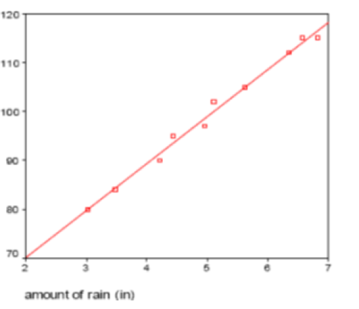

Introduction to Probability Models
Lecture 39
Qi Wang, Department of Statistics
Nov 30, 2018
Calculate Correlation
- Population
- Variance: $\sigma^2 = \frac{\sum_{i=1}^N(x_i -\mu)^2}{N}$
- Covariance: $\sigma_{x, y} = \frac{\sum_{i=1}^N(x_i - \mu_x)(y_i - \mu_y)}{N}$
- Correlation: $\rho_{x, y} = \frac{\sum_{i=1}^N (x_i - \mu_x)(y_i - \mu_y)}{\sqrt{\sum_{i=1}^N(x_i - \mu_x)^2}\sqrt{\sum_{i=1}^N(y_i - \mu_y)^2}}$
- Sample
- Variance: $s^2 = \frac{\sum_{i = 1}^n(x_i - \bar{x})^2}{n - 1}$, SD: $s_x = \sqrt{\frac{\sum_{i = 1}^n(x_i - \bar{x})^2}{n - 1}}$
- Covariance: $s_{x, y} = \frac{\sum_{i=1}^n(x_i - \bar{x})(y_i - \bar{y})}{n - 1}$
- Correlation: $r_{x, y} = \frac{\sum_{i=1}^N (x_i - \bar{x})(y_i - \bar{y})}{\sqrt{\sum_{i=1}^N(x_i - \bar{x})^2}\sqrt{\sum_{i=1}^N(y_i - \bar{y})^2}}$
- Sample correlation is often written as $r_{x, y} = \frac{s_{x, y}}{s_x s_y}$
Example 1
You want to compare the airspeed velocity of unladen swallows by species. Suppose you collect the following data on pairs of African and European swallows.
| African |
European |
| 18 |
21 |
| 22 |
22 |
| 26 |
25 |
| 30 |
28 |
Calculate the means, variances, standard deviations of each. Then calculate the covariance and the correlation between the two species.
Least-Squares Regression
Can we do better than just a scatter plot and the correlation in describing how x and y are related? What if we want to predict y for other values of x?
Least-Squares Regression fits a straight line through the data points that will minimize the sum of the vertical distances of the data points from the line
- Minimizes $\sum_i^n e_i^2$
- Equation of the line is: $\hat{y} = b_0 + b_1 x$
- Slope of the line is:$b_1$, where the slope measures the amount of change caused in the response variable when the explanatory variable is increased by one unit.
- Intercept of the line is:$b_0$, where the intercept is the value of the response variable when the explanatory variable = 0. (i.e. value where line intersects the y-axis)
- Used for Prediction: using the line to find y-values corresponding to x-values that are within the range of your data x-values
- Using values outside range of the collected data can lead to extrapolation
- Coefficient of Determination: Denoted by $r^2$, it gives the proportion of the variance of the response variable that is predicted by the explanatory variable. So when $r^2$ is high, close to 1 or 100%, you have explained most of the variability
- Residuals: the difference between the observed value of the response variable ($y$) and the predicted value ($\hat{y}$):
residuals = observed y - predicted y, $$e = y - \hat{y}$$
- Relationship between Correlation and Coefficient of Determination: $|r_{x, y}| = \sqrt{r^2}$
Example 2
We want to examine whether the amount of rainfall per year increases or decreases corn bushel output. A sample of 10 observations was taken, and the amount of rainfall (in inches) was measured, as was the subsequent growth of corn.
| Amount of Rain |
Bushels of Corn |
| 3.03 |
80 |
| 3.47 |
84 |
| 4.21 |
90 |
| 4.44 |
95 |
| 4.95 |
97 |
| 5.11 |
102 |
| 5.63 |
105 |
| 6.34 |
112 |
| 6.56 |
115 |
| 6.82 |
115 |

The regression line (also called the prediction line or trend line) is $\hat{y} = 50.8350 + 9.6252x$ with $r^2 = 0.9906$ On the rain/corn data above, predict the corn yield for
- 5 inches of rain
- 6.56 inches of rain
- 0 inches of rain
- 100 inches of rain
- For which amounts of rainfall above do you think the line does a good job of predicting actual corn yield? Why?
- What percentages of the variation in corn yield is explained by the relationship with amount of rain?
- Calculate the residual when the amount of rain is 6.56 inches.
- Calculate the Correlation and compare it with the square root of $r^2$.